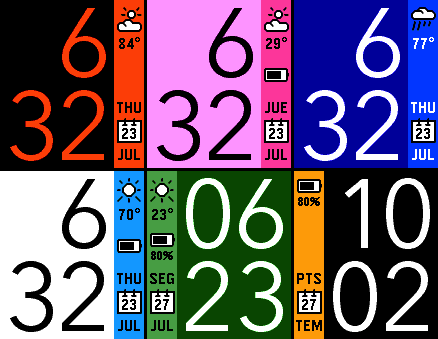
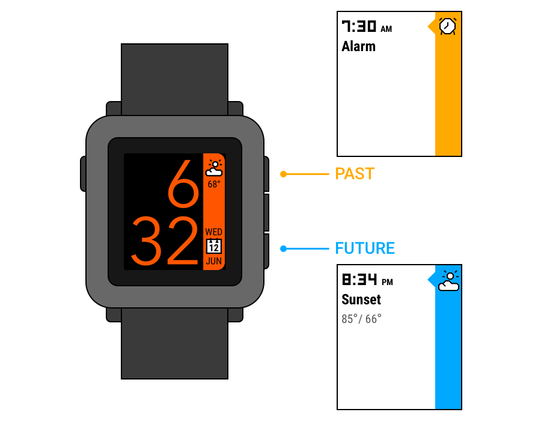
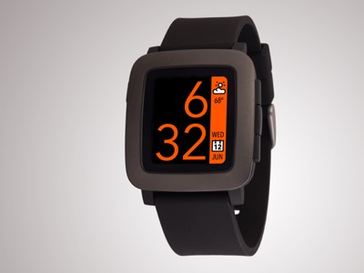

Your new default watchface
Designed to blend perfectly with the aesthetic defined by the Pebble watch's "timeline" interface, TimeStyle offers
unprecedented style and customizability.
Unlike almost all other Pebble digital watchfaces, the time is displayed using antialiasing.
Finally, TimeStyle is completely
open source.

Your watch. Your style.
Select from over 20 preset color schemes, or mix and match any of the 64 colors the Pebble Time can display.
Many features are included by request, including an optional battery meter and support for 10 different languages!
Designing TimeStyle
When I got a Pebble Time watch,
I found that, among all the various watchfaces available,
none of them really matched the rest of the watch's aesthetic: the timeline.
The “timeline” is a UI introduced for the Pebble Time that visualizes past and future events,
called “pins”, with the watch's face serving as the present.
Pins can include weather, alarms, and calendar events:

While the current watchface serves to visualize the present, no watchfaces available looked
anything like the timeline; I felt that an ideal watchface should feel like part of the timeline.
Evolution
Building upon this last concept, I switched to a thinner font and dropped the AM/PM indication. Compositing
this into an official press photo of the Pebble Time, I posted the following mockup to
Dribbble
and Reddit:

On Reddit, the response was extremely positive, with the mockup becoming one of the 25 most highly voted posts of all time on r/pebble.
However, with this popularity came something I didn't anticipate -- customization requests!
People were asking for all sorts of features; I didn't want to let them down, but
adding the level of customization required would prove challenging to implement.
Implementation
Like all Pebble watchfaces, TimeStyle was written in pure C.
A key challenge I faced was antialiasing the digits. While the Pebble Time's screen is technically
capable of displaying text with AA, the software does not support it.
Early on, I had wanted to include text-AA, and had planned to just bake it in by using images for the digits.
However, that was thrown into question with all the requests for customizability -- how could I use images for the text if the background color and text color were customizable?
My solution was to use palette swapping: each digit image has four colors: white (the background), black (the foreground), and two intermediate shades of grey.
Black and white are replaced with the user's chosen foreground background colors, and the R, G, and B components of these colors are averaged to determine the two closest intermediate colors.
Release
My efforts to satisfy the various user requests proved worthwhile -- within only two weeks
of its release, TimeStyle had already become one of the top 15 most popular color
watchfaces of all time, garnering over 880 “hearts” and more than 10,000 installations.
It was even featured in the Pebble app store: